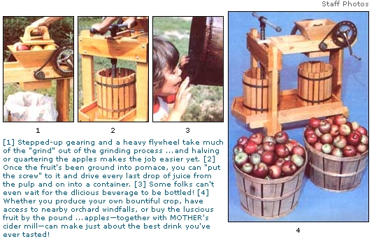
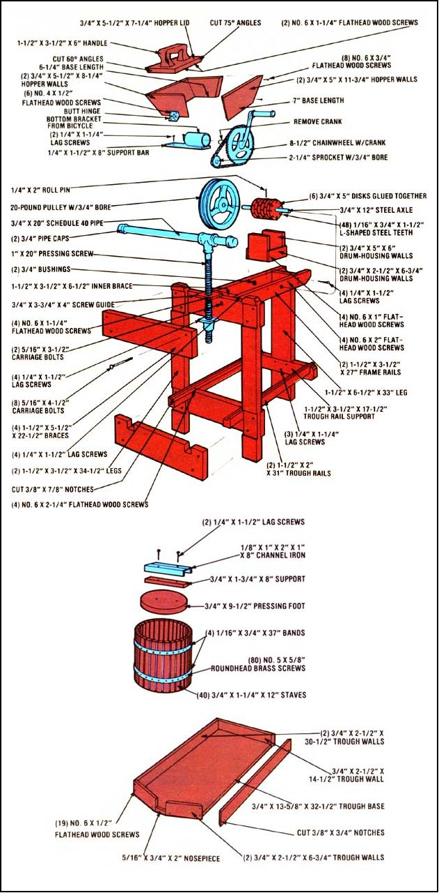

ILLUSTRATIONS A century ago, the home cider press was a familiar sight in rural America. Today, however, you're not likely to encounter one anywhere but in antique shops ... unless, that is, you choose to go ahead and build your own apple masher, which is exactly what MOTHER's Emerson Smyers did.
Since MOM's western North Carolina headquarters is in the apple capital of the South, it's hard for us not to take advantage of the abundant fruit in season. We had built a cider-maker or two in the past, but had quickly discovered that what we really needed was a mill, which combines an apple grinder and a press, to get as much juice from the harvest as possible. The design we finally came up with uses mostly readily available parts, works as well as any modern store-bought model, and looks (we think) rather attractive.
To build your own version of MOTHER's apple mill, start by gathering the needed hardware. The only item you're likely to have difficulty in locating is the pressing screw, and-if you can't scrounge a unit from a discarded office chair-you can purchase a new one from Woodcraft Supply Corp., Dept. TMEN, 313 Montvale Avenue, Woburn, Massachusetts 01888. (The company's complete catalog-with ordering information-is available for $1.00.) The other metal parts include the chain, crank, chain-wheel, and bottom bracket assembly from a scrapped bicycle ...plus a 3/4" X 12" shaft to serve as an axle, two 3/4" brass bushings, a 1/4" X 2" roll pin, a 314 "bore sprocket about 3-1/2 times smaller in diameter than the chainwheel, and a 20pound pulley or flywheel that fits on the steel axle. You'll also need a section of 3/4" pipe that's about 20" long, two pipe caps, an 8" length of 1/8" X 1 " X 2" X 1 " channel iron, a 1/4" X 1-1/2" X 8" metal plate, 16gauge flat stock measuring 3/4" X 220" (it's best to buy a full 20-foot piece to avoid paying a cutting charge), and the assorted fastening hardware called for in the accompanying illustration.
Next, you'll want to select your lumber and cut it to size. The press's framework is essentially yellow pine, but the two bottomless tubs (in which the ground apple is first caught and then pressed), the hopper, grinding drum, drum housing, screw guide, and trough walls are made of oak ...which is sturdy and doesn't affect the cider's flavor. An 8-foot length of 2 X 6, a 33" piece of 2 X 8, and two sections of 2 X 4-one 8 and the other 10 feet long-will be enough pine to complete your frame, and about 24 feet of 1 X 6 oak should be adequate to supply the hardwood components. You'll also need a few scraps of pine to use when making the hopper cover, its handle, and a pressing foot support ...as well as a section of plywood, measuring 3/4" X 14" X 42", from which to fabricate the trough base and the pressing foot itself.
It's important to plan your cuts before sizing your lumber, to avoid halving a component that should have remained whole. As an example, you should cut the two 34-1/2", the 17-1/2", and the 6-1/2" frame sections from your 8-foot 2 X 4 ...and order your oak in two lengths-10 and 14 feet-then cut all your 3/4" X 1-1/4" X 12" tub staves (20 for each tub) from the small er of the pieces. Once you've trimmed everything to the sizes indicated in the diagram, you can go ahead and complete the cross-lap and dado joints as shown, and cut the notches in the trough rails to the proper dimensions. (Remember, too, that the trough walls must be grooved to accept the 3/4 " plywood base.)
You may find, as our Mr. Smyers did, that two components of the press are a little tedious to assemble. The first is the tapered hopper, which will require that you make a compound joint ...one that connects two angled pieces of wood. If you've never had experience with this admittedly difficult carpentry task, the bin can be fashioned much more easily by simply butting the sides and ends together and securing them with screws to produce a box-shaped hopper.
The other time-consuming chore is assembling the grinding drum. Begin this job by cutting part of your flat stock into 48 small bars-1-1/2" long apiece-and bending each one, in a vise, to form an L shape with 1/4" and 1 " legs (the remaining quarter-inch will be used up in the bend).
Next, take your six 5"-diameter disks and drill eight evenly spaced 118" holes through each wooden plate at points 3/4 inch from the outer edge. Then use a coping saw to cut two slots-one 3/4" and the other 1/4 "long-outward from each of the 1/8" holes and at right angles to each other ...so that the longer of the two, following the radius of the circle, slices through the edge of the disk. When all 48 L-shaped slots are formed, take a small hammer and tap the angled metal bars firmly into place within their respective "cradles" ... approximately 1/4" will protrude from the slots to become the apple-grinding teeth.
Finally, complete your drum by gluing all of the toothed disks together (let the teeth form a random pattern, as shown in the illustration) ...drilling a 3/4" bore through the exact midpoint of the resulting wooden cylinder ...and making a second hole-1/4" in diameter-perpendicular to the axle bore and going through one side of the drum and partially into the other. Before inserting the axle shaft and its roll pin, however, you'll have to revolve the grinding assembly slowly and true its teeth as necessary-with a file or wheel to prevent a lateral wobble when the machine is in use. With this done, you can slip the axle shaft through the bushings and drum, align it properly, then drill on through the axle and pin the shaft in its place.
The metalworking portion of this project is fairly straightforward. What's left of the flat stock is used to band the tub staves together (the oak slats ought to be about 1/4 inch apart, and the straps' ends should overlap an inch or so) ...and installing the screw and pressing foot support bracket involves nothing more than bolting them in place.
To make the drive mechanism, just cut the bottom bracket assembly (the part that holds the pedals and sprocket) from the bike, and grind what's left of the frame tubes flush with the cylinder to produce a smooth surface. Then lop off the pedal crank opposite the chainwheel, remove the rubber and frame from the remaining pedal, and weld the crank's circular housing to the surface of the 1/4" X 1-1/2" X 8" bar, close to the end. Next, temporarily place the bar on top of the press frame's single leg, and wrap the bicycle chain around the large and small sprocket to determine where it should be cut in order to fit. After rejoining the ends with a connecting link, move the crank mount until the chain is taut, and secure the assembly to the frame.
The final step is finishing the wooden parts. With the exception of the pressing foot and the inner surface of the juice trough, everything should be given a coat of polyurethane. Those two components. since they'll be repeatedly exposed to the squeezings, must be covered with two layers of fiberglass resin.
When your mill is complete and fully "cured", you're ready to make cider. Since the job is much less messy when you use a filter, take the trouble to line your tubs with several layers of cheesecloth or with some clean white pillowcases before you begin. In choosing your apples, remember that a mixture of varieties-regardless of what they are-tends to make the best cider. And, even though minor bruises and dents won't harm the flavor of your final product, rot and mold will ...so take the time to cut any bad spots from the fruit before you run it through the grinder.
If you feel energetic, you can feed the apples into the hopper whole. On the other hand, you might want to halve or quarter them prior to grinding ...both to make the mechanism a bit easier to turn and to assure that the "meat" is well chopped In either case, crank with one hand and press down firmly on the hopper lid with the other. Once you've run a bushel or so through the grinder (the hopper holds about half a peck), you can slide the first tub under the press and have a friend start grinding anew ...using the second "oaken bucket" as a receptacle. Meanwhile. you can begin to squeeze out the juice (which will run into a pail set under the trough's spout). Be sure to really lean into the screw handle, too, so you don't leave any of the precious liquid in the pulp. Depending on how earnestly you grind and press (and on the quality of the fruit), the little mill will yield anywhere from three quarts to over two gallons per bushel.
When you've spent your supply of apples and have composted the leftover pulp (or fed it to the livestock), hose down the press ...and quench your thirst with the fruity ambrosia!
|
 |
 |
|